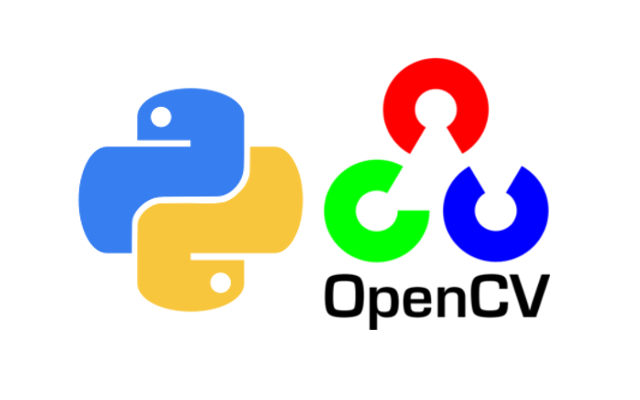
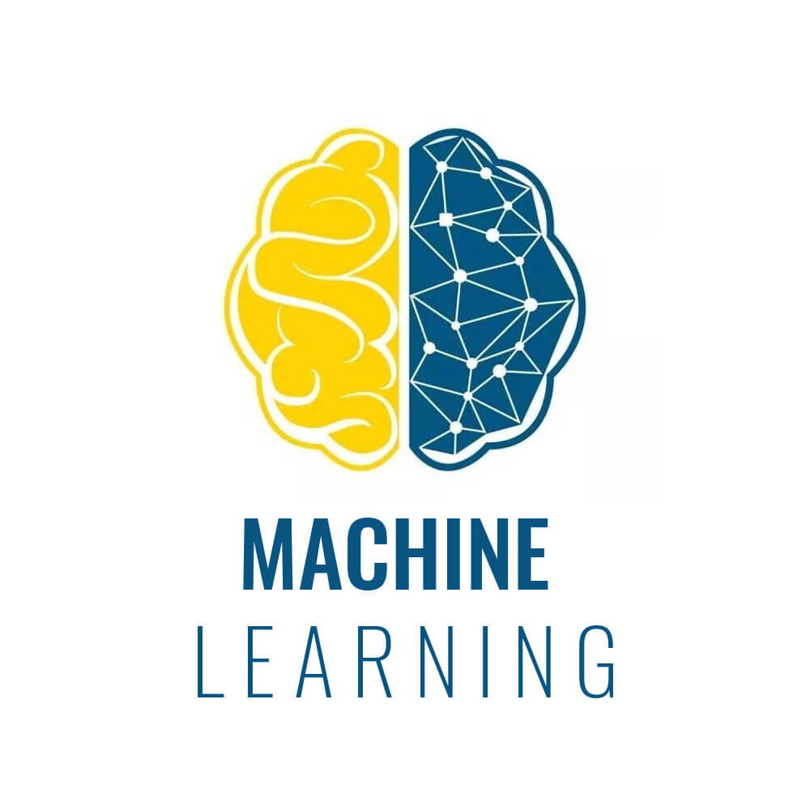
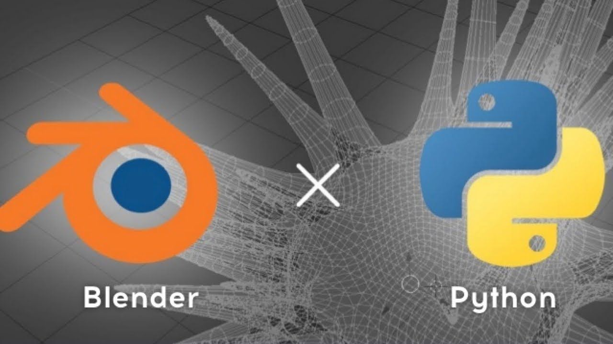

OpenCV is a huge open-source library for computer vision, machine learning, and image processing. It can process images and videos to identify objects, faces, or even the handwriting of a human.
Know morePygame is a cross-platform set of Python modules which is used to create video games. It consists of computer graphics and sound libraries designed to be used with the Python programming language.
Know more
Machine learning is a method of data analysis that automates analytical model building. It is a branch of artificial intelligence based on the idea that systems can learn from data, with minimal human intervention.
Know moreDjango is a high-level Python web framework that enables rapid development of secure and maintainable websites. Django helps developers avoid many common security mistakes by providing a framework that has been engineered to "do the right things" to protect the website automatically.
Know more
Blender has an embedded Python interpreter which is loaded when Blender is started and stays active while Blender is running. This interpreter runs scripts to draw the user interface and is used for some of Blender's internal tools as well.
Know more